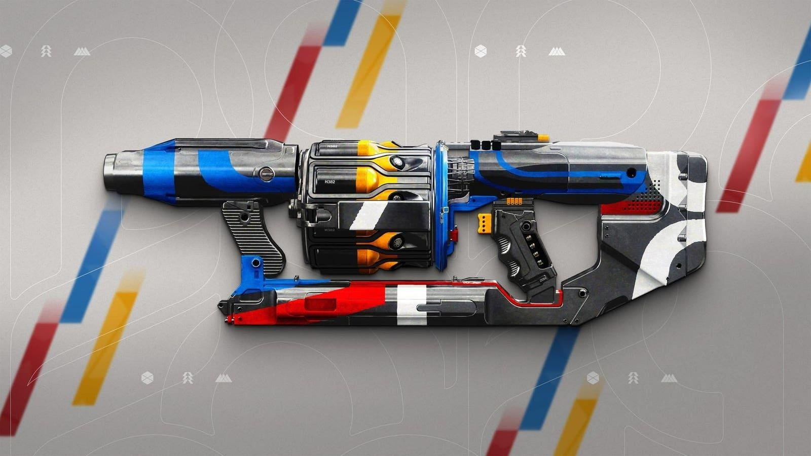

The ‘Destiny 2’ God Rolls For Hullabaloo, The Guardian Games Grenade LauncherGuardian Games has arrived in Destiny 2 with a lot of bugs, but also a new wave frame heavy grenade launcher, Hullabaloo, whose name I hate but it does seem to be worth farming in some capacity. Grenade launchers have gotten a big buff to ammo reserves, and wave frame heavies now have 20% more damage and 40% more wave width, so yeah, it might actually be worth picking up if it ends up being the meta. I mean, it will not be the meta, but it could be pretty fun. Here are the god rolls for Hullabaloo, which you may want to be farming for: - Voltshot/Chain Reaction – Ehhh okay, I know this was the big Bungie advert for the weapon given that you can get this roll on a weapon for what I believe is the first time. Chain Reaction, sure, even better mob clearing but Voltshot? On this kind of heavy? I just don’t know how useful that’s going to be, even if the combo sounds cool. Maybe on a breach loader special. - Autoloading/Chain Reaction – Alright now you’re speaking my language. I am a huge sucker for autoloading on any GL, and this would be a heavy version of the best wave frames we seen in the special slot. This is the one I’m going for more than most. - Envious Assassin/Cascade Point – While Envious has had a bit of a nerf to prevent wild ammo stacking, I still think this would be a fun combo to pump out waves fast and furious when Cascade triggers. - Field Prep/Vorpal or Chain Reaction – Field Prep is going to be even more valuable for the heavy GL class now that reserve ammo has increased, as it will raise it to really useful proportions. Pick your second perk how you want it. I remain skeptical that even with recent buffs that heavy wave frame GLs are going to be worth the heavy slot, but I guess we’ll see, and it certainly does not hurt to farm up a good one. Plus, in the meantime, you may get some other Guardian Games rolls that are pretty good as new perks have been added to those pools. While the main attraction of this event is going to be the new Skimmer, which may or may not be totally breaking the game right now, I think farming a good Hullabaloo may be worth it, and I definitely want to try one out with the buffs. We’ll see if it actually pans out or not. Follow me on Twitter, Threads, YouTube, and Instagram. Pick up my sci-fi novels the Herokiller series and The Earthborn Trilogy. |
 |